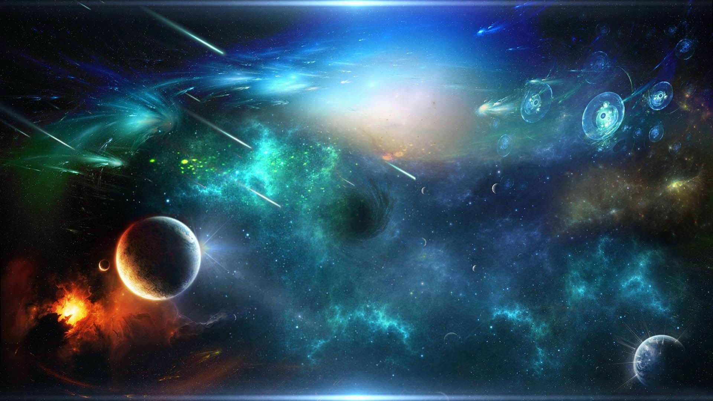

Interesting Facts
1 / 3

- If you could fly a plane to Pluto, the trip would take more than 800 years! Time to escape the Coronavirus haha... unless? (^・ω・^ )
- The space between galaxies is not completely empty but has an average of one atom per cubic meter.
- Comets are leftovers from the creation of our solar system about 4.5 billion years ago – they are made of sand, ice and carbon dioxide.
- The highest mountain known to man is on an asteroid called Vesta (which is also the largest asteroid in the Solar System).
2 / 3

- We're able to have solar eclipses because the Sun is exactly 400 times the size of the moon, but the moon is 400 times closer to Earth.
- Space does not begin at a specific altitude above the Earth, but the Kármán line at 100 km is a commonly used definition.
- In the observable universe there are an estimated 2 trillion (2,000,000,000,000) galaxies. I can't even count to a trillion!
- The universe is observed to be 13.8 billion years old and has been expanding since its formation in the Big Bang.
3 / 3

- There are an estimated 100-400 billion stars in our galaxy, the Milky Way.
- There are more stars in the universe than grains of sand on all the beaches on Earth. That’s at least a billion trillion!
- The sun makes up more than 99% of the solar system's mass. The sun is frickin' HUGE. The rest of the solar system's mass is split among the eight planets and their own little moons, comets, asteroids and assorted dust and gas surrounding the Sun.
- One million Earths could fit inside the sun! Put that into perspective, then consider this fact; the sun is considered an average-size star.